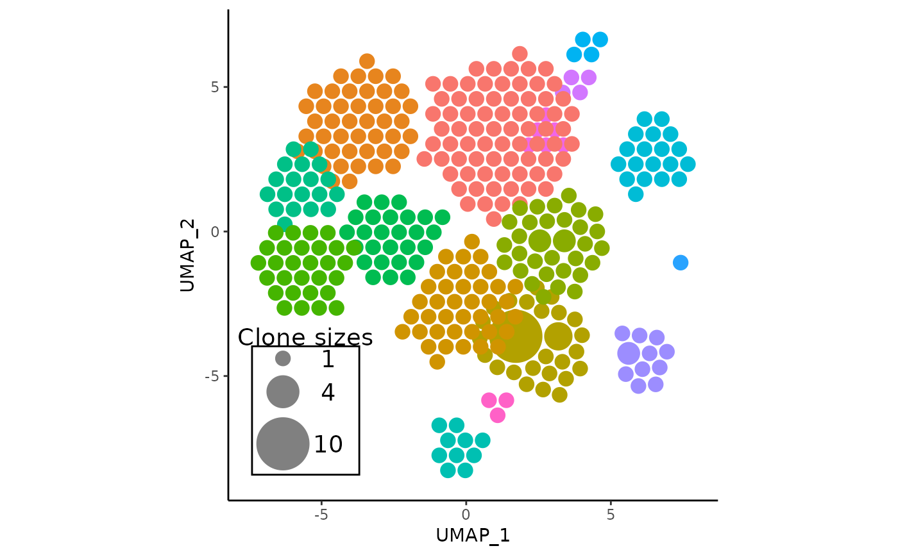

Adjust the parameters of the APackOfTheClones reduction in a seurat object
Source:R/AdjustAPOTC.R
AdjustAPOTC.Rd![[Stable]](figures/lifecycle-stable.svg)
If the user is unsatisfied with the clonal expansion plot that
was generated from RunAPOTC() and APOTCPlot(), this function has a range of
arguments to modify the data and/or parameters of the visualization. Note
that some of the arguments may conflict with each other.
Usage
AdjustAPOTC(
seurat_obj,
reduction_base = NULL,
clonecall = NULL,
...,
extra_filter = NULL,
run_id = NULL,
new_rad_scale_factor = NULL,
new_clone_scale_factor = NULL,
repulse = FALSE,
repulsion_threshold = 1,
repulsion_strength = 1,
max_repulsion_iter = 10L,
relocate_cluster = NULL,
relocation_coord = NULL,
nudge_cluster = NULL,
nudge_vector = NULL,
recolor_cluster = NULL,
new_color = NULL,
rename_label = NULL,
new_label = NULL,
relocate_label = NULL,
label_relocation_coord = NULL,
nudge_label = NULL,
label_nudge_vector = NULL,
verbose = TRUE
)Arguments
- seurat_obj
The seurat object to be adjusted.
- reduction_base
character. The seurat reduction to base the clonal expansion plotting on. Defaults to
'umap'but can be any reduction present within the reductions slot of the input seurat object, including custom ones. If `'pca'“, the cluster coordinates will be based on PC1 and PC2. However, generally APackOfTheClones is used for displaying UMAP and occasionally t-SNE versions to intuitively highlight clonal expansion.- clonecall
character. The column name in the seurat object metadata to use. See
scRepertoiredocumentation for more information about this parameter that is central to both packages.- ...
additional "subsetting" keyword arguments indicating the rows corresponding to elements in the seurat object metadata that should be filtered by. E.g.,
seurat_clusters = c(1, 9, 10)will filter the cells to those in theseurat_clusterscolumn with any of the values 1, 9, and 10. Unfortunately, column names in the seurat object metadata cannot conflict with the keyword arguments. MAJOR NOTE if any subsetting keyword arguments are a prefix of any preceding argument names (e.g. a column namedreductionis a prefix of thereduction_baseargument) R will interpret it as the same argument unless both arguments are named. Additionally, this means any subsequent arguments must be named.- extra_filter
character. An additional string that should be formatted exactly like a statement one would pass into dplyr::filter that does additional filtering to cells in the seurat object - on top of the other keyword arguments - based on the metadata. This means that it will be logically AND'ed with any keyword argument filters. This is a more flexible alternative / addition to the filtering keyword arguments. For example, if one wanted to filter by the length of the amino acid sequence of TCRs, one could pass in something like
extra_filter = "nchar(CTaa) - 1 > 10". When involving characters, ensure to enclose with single quotes.- run_id
character. This will be the ID associated with the data of a run, and will be used by other important functions like
APOTCPlot()and AdjustAPOTC. Defaults toNULL, in which case the ID will be generated in the following format:reduction_base;clonecall;keyword_arguments;extra_filterwhere if keyword arguments and extra_filter are underscore characters if there was no input for the
...andextra_filterparameters.- new_rad_scale_factor
a single numeric in (0, 1]. changes the radius scaling factor of all circles.
- new_clone_scale_factor
a single numeric in (0, 1]. changes the clone_scale_factor
- repulse
If
TRUE, will attempt to push overlapping clusters away from each other.- repulsion_threshold
numeric. The radius that clonal circle clusters overlap is acceptable when repulsing.
- repulsion_strength
numeric. The smaller the value the less the clusters repulse each other per iteration, and vice versa.
- max_repulsion_iter
integer. The number of repulsion iterations.
- relocate_cluster
Numeric or Character. Indicates which cluster(s) based on the index or label to relocate to new coordinates.
- relocation_coord
numeric of length two or a list of numerics of length two of length of
relocate_cluster. If its a list, indicates each coordinate that the clusters inrelocate_clustershould move to. If its just a numeric, then will relocate all clusters inrelocate_clusterto the input, which is likely not desired behavior, so this should only be convenience syntax ifrelocate_clusterhas length 1.- nudge_cluster
Numeric or Character. Indicates which cluster(s) based on the index or label to "nudge"/translate their coordinate(s) by.
- nudge_vector
numeric of length two or a list of numerics of length two of length of
nudge_cluster. If its a list, indicates each translation vector (in other words, x-y coordinates) that the clusters innudge_clustershould be translate by. If its just a numeric, then will translate all clusters innudge_clusterby the input - which mostly is syntactic sugar for translating a single cluster if the input ofnudge_clusteris of length 1.- recolor_cluster
Numeric or Character. Indicates which cluster(s) based on the index or label to change their color by.
- new_color
character of arbitrary length. Indicates the corresponding new colors that selected clusters in
recolor_clustershould be changed to.- rename_label
Numeric or character. Indicates the index or name of label(s) to be renamed.
- new_label
Character. Indicates the corresponding new label(s) that selected label(s) in
rename_labelshould be changed to.- relocate_label
Numeric or character. Indicates the index or name of label(s) to be relocated.
- label_relocation_coord
Numeric of length two or a list of numerics of length two of length of
relocate_label. If it's a list, indicates each coordinate that the labels inrelocate_labelshould move to. If it's just a numeric, then will relocate all labels inrelocate_labelto the input, which is likely not desired behavior, so this should only be convenience syntax ifrelocate_labelhas length 1.- nudge_label
Numeric or character. Indicates the index or name of label(s) to be "nudged"/translated.
- label_nudge_vector
Numeric of length two or a list of numerics of length two of length of
nudge_label. If it's a list, indicates each translation vector (in other words, x-y coordinates) that the labels innudge_labelshould be translated by. If it's just a numeric, then will translate all labels innudge_labelby the input - which mostly is syntactic sugar for translating a single label if the input ofnudge_labelis of length 1.- verbose
logical. Decides if visual cues are displayed to the R console of the progress.
Examples
# do an APackOfTheClones run
pbmc <- RunAPOTC(get(data("combined_pbmc")), verbose = FALSE)
# adjust the rad_scale_factor, and nudge cluster 1 by x = 1, y = 1
pbmc <- AdjustAPOTC(
pbmc,
new_rad_scale_factor = 0.9,
nudge_cluster = 1,
nudge_vector = c(1, 1),
verbose = FALSE
)
#> * using the latest APackOfTheClones Run Data with object id: umap;CTstrict;_;_
# plot the result
APOTCPlot(pbmc)
#> * using the latest APackOfTheClones Run Data with object id: umap;CTstrict;_;_
#> * generated ggplot object

# rename some labels
pbmc <- AdjustAPOTC(
pbmc, rename_label = c(2, 5), new_label = c("Foo", "Bar")
)
#> * using the latest APackOfTheClones Run Data with object id: umap;CTstrict;_;_
# perhaps multiple clusters need to be relocated and repulsed
pbmc <- AdjustAPOTC(
pbmc,
relocate_cluster = c("Foo", "C10"), # using labels works too
relocation_coord = list(c(2, 3.5), c(0, 5)),
repulse = TRUE,
verbose = FALSE
)
#> * using the latest APackOfTheClones Run Data with object id: umap;CTstrict;_;_
# plot again to check results
APOTCPlot(pbmc, show_labels = TRUE, verbose = FALSE)
#> * using the latest APackOfTheClones Run Data with object id: umap;CTstrict;_;_